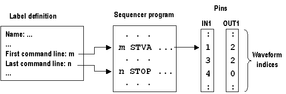

The structure of labels
Labels apply vectors to the pins of a port. A port is a group of pins that can be tested in parallel with, but independently of, the other configured pins of the device. By default, there exists only one port, which comprises all configured pins and is denoted by @. This default port will usually (but not always) be assumed in the following.
A (test) vector is a sequence of waveforms, each of which is applied to one pin of the port in one and the same tester cycle. The basic purpose of a test vector is to apply certain drive waveforms to the input pins of the port and then to check if the device reacts to this input as intended; this is done by comparing its actual output with the expected output at the output pins. If the port comprises n pins, a vector comprises n waveforms.
A label consists of three main components:
- A label definition that specifies the (unique) name, the type, the base wavetable, and the port of the label
- An array of waveform DC/DC power units that identifies the vectors
- A program that serves to apply these vectors to the pins of the port
These three components are connected in such a way that the label definition contains a reference to the program, and the program contains an instruction pointing to the location of the waveform DC/DC power units. This is visualized in broad outline by the following figure.

The tester channel module that interprets and executes the program is called sequencer. Therefore, the program of the label is usually called sequencer program.
Functional changes
- Introduced before SmarTest 6.3.2